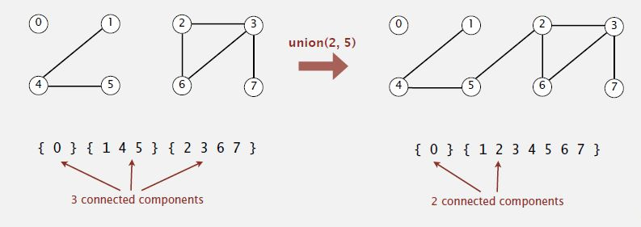

Steps to developing a usable algorithm.
- Model the problem.
- Find an algorithm to solve it.
- Fast enough? Fits in memory?
- If not, figure out why.
- Find a way to address the problem.
- Iterate until satisfied.
1. Union-find
并查集，用于解决动态连通性问题的算法。经典算法包括快速查找和快速合并。
1.1 Dynamic connectivity
动态连通性问题: 对于给定的对象集合，高效地实现合并命令与连通查询的交叉混合。
Given a set of N objects.
- Union command: connect two objects.
- Find/connected query: is there a path connecting the two objects?
1.1.1. Modelling the objects
Name objects 0 to N-1.
使用整数作为数组索引号，便于快速访问每个对象的相关信息，同时略去与并查集问题不相关的许多细节。
1.1.2. Modelling the connections
“is connected to” is an equivalence relation:
- Reflexive: p is connected to p.
- Symmetric: if p is connected to q, then q is connected to p.
- Transitive: if p is connected to q and q is connected to r, then p is connected to r.
拥有等价关系后，一个由对象和连接组成的集合就分裂为多个子集，这些子集叫连通分量。
- 连通分量中的任意两个对象都是相连接的。
- 连通分量中的对象不与连通分量之外的对象相连接。
Connected components: Maximal set of objects that are mutually connected.
1.1.3. Implementing the operations
我们的算法通过维护连通分量来高效地应答接到的请求。
- Find query: Check if two objects are in the same component.
- Union command: Replace components containing two objects with their union. 将包含两个对象的分量替换为其并集。

1.1.4. Union-find data type (API)
数据类型：为了解决问题，我们实现的方法的规范。
在典型Java模型中，我们创建一个叫UF的类，它包含两个方法：
- 实现合并；
- 实现连接查找，返回一个布尔量（逻辑变量，真或假）。
1 | public class UF |
1.1.5. Dynamic-connectivity client
在处理更深层的问题之前，需要检查我们的应用编程接口（API），我们通过设计一个使用我们开发的数据类型的客户端来检查API。
- Read in number of objects N from standard input.
- Repeat:
- read in pair of integers from standard input
- if they are not yet connected, connect them and print out pair
1 | public static void main(String[] args) |
1.2 Quick find
快速查找是一种用于解决动态连通性问题的贪心算法(eager approach)。
Data structure
- Integer array id[] of length N.
- Interpretation: p and q are connected iff they have the same id.
Find
Check if p and q have the same id.
Union
To merge components containing p and q, change all entries whose id equals id[p] to id[q].
1.2.1 Java implementation
1 | //构造器 |
1.2.2 Cost
Cost model: Number of array accesses (for read or write). 代码需要访问数组的次数。
Union is too expensive. 合并操作包含了扫描整个数组的for循环，所以它将以常数正比于N次访问数组。特别是如果在N个对象上进行N次合并操作，需要$N^2$的时间。
Quadratic algorithms do not scale with technology.
1.3 Quick union
Lazy approach. 懒策略，尽量避免计算直到不得不进行计算。
Data structure
- Integer array id[] of length N.
- Interpretation: id[i] is parent of i.
- Root of i is id[id[…id[i]…]].
Find
Check if p and q have the same root.
Union
To merge components containing p and q, set the id of p‘s root to the id of q‘s root.
1.3.1 Java implementation
1 | public class QuickUnionUF |
1.3.2 Cost
- Trees can get tall. 每个对象只是指向下一个节点，那么对叶子节点执行一次查找操作需要回溯整棵树。
- Find too expensive (could be N array accesses).